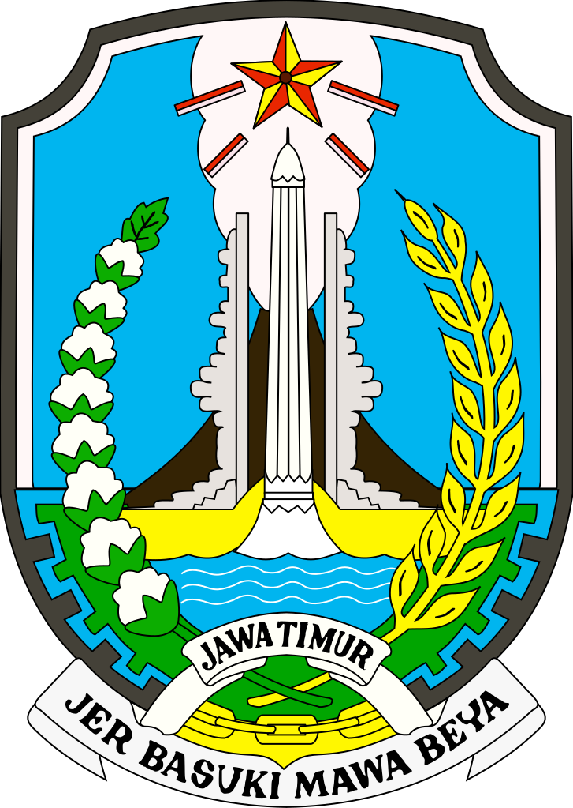
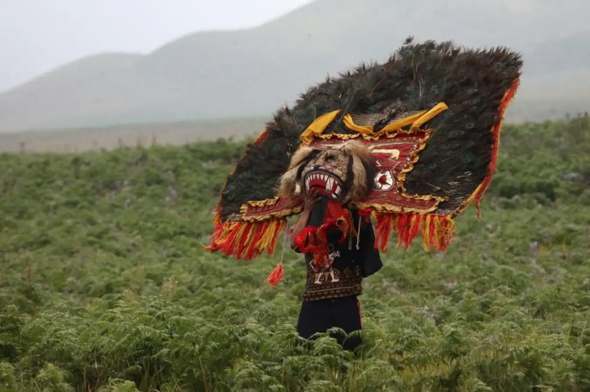
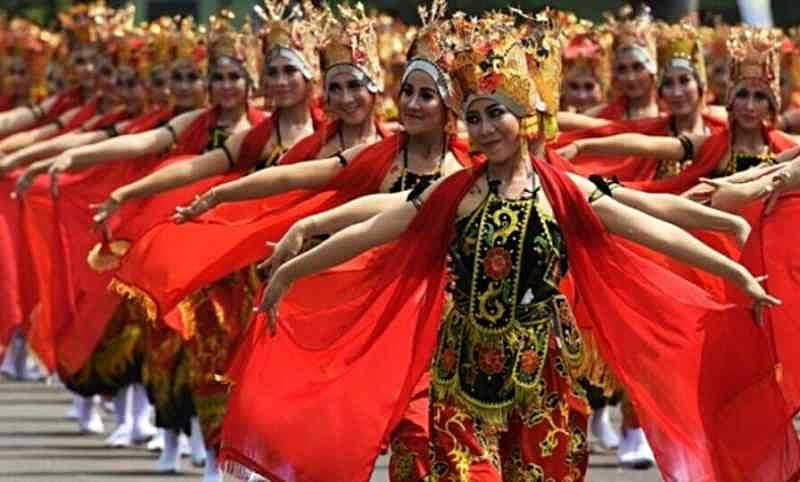
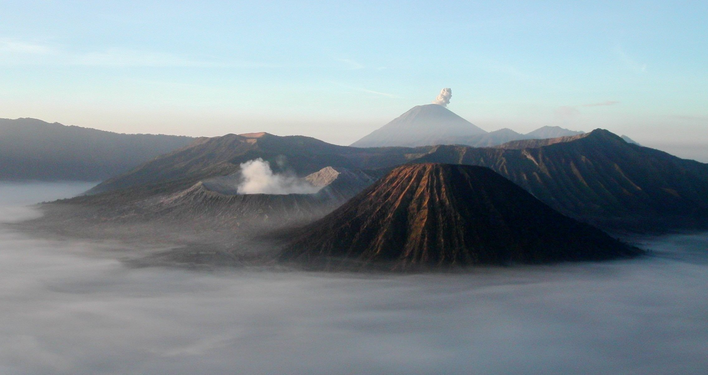

Sumatra
Nusa Tenggara
Maluku
Papua
Jawa Timur
Jawa Timur adalah sebuah wilayah provinsi yang terletak di bagian timur Pulau Jawa, Indonesia. Ibu kotanya adalah Kota Surabaya. Luas wilayahnya yakni 48.033 km², dengan jumlah penduduk sebanyak 41.144.067 jiwa (tahun 2022) dan kepadatan penduduk 857 jiwa/km2. Hampir seperempat dari jumlah penduduk Jawa Timur bermukim di wilayah metropolitan Surabaya. Jawa Timur memiliki wilayah terluas di antara enam provinsi di Pulau Jawa, dan memiliki jumlah penduduk terbanyak kedua di Indonesia setelah Jawa Barat.
Informasi Umum
| Nama Provinsi | Kode Wilayah | Kode Internasional | Singkatan Umum | Ibu Kota | Hari Jadi | Lambang |
|---|---|---|---|---|---|---|
| Jawa Timur | 35 | ID-JI | Jatim | Surabaya | 12 Oktober 1945 |  |
Budaya
Rumah Adat Joglo, Rumah adat Jawa Timur satu ini merupakan saah satu ikon yang terkenal bagi provinsi tersebut. Desain rumah joglo sangat khas dengan bentuk limas yang bangunannya didirikan dari kayu jati. Rumah ini memiliki area-area yang khusus yang dinamakan senthong tengen, senthong kiwa, dan senthong tengah. Dalam rumah ada Jawa Timur ini, terdapat tiang utama dan tanah yang dipupuk lebih tinggi dari sekitarnya. Keduanya adalah pondasi cerminan dari keharmonisan antara alam dan manusia, serta manusia dengan manusia lainnya. Pondasi Rumah Joglo juga erat dengan kepercayaan Kejawen yang banyak dianut masyarakat Jawa.
Jebeng dan Thulik. Pakaian adat Jawa Timur ini berasal dari Banyuwangi. Kata jebeng dan thulik merupakan bahasa Osing. Jebeng sendiri dikhususkan untuk kaum wanita, sedangkan thulik untuk kaum pria. Baju jebeng berupa kebaya polos dengan kain khas Banyuwangi untuk bawahannya. Sementara thulik adalah baju lengan panjang polos hitam yang dilengkapi kancing berwarna emas, serta celana panjang yang berwarna senada.
Menyaksikan kesenian berupa tari-tarian adalah suatu kesenangan tersendiri, khususnya bagi penikmat seni. Selain menjadi momen untuk mengapresiasi dan menjaga tradisi, kamu juga bisa terhibur dengan pementasan yang dilakukan.

Tarian Reog Ponorogo identik dengan topeng kepala singa yang terbuat dari rangkaian bulu merak. Uniknya, topeng berbobot hingga 50 kg itu hanya dikendalikan oleh mulut penarinya. Tarian Reog Ponorogo biasanya dipertontonkan pada malam satu suro dan malam purnama. Namun, tarian ini juga sering ditampilkan pada acara adat dan pesta pernikahan. Jumlah penarinya sekitar 10-17 orang. Ada yang meyakini bahwa Tarian Reog Ponorogo merupakan kisah peperangan yang terjadi antara Raden Katong dan Ki Ageng Kutu. Namun, tidak sedikit yang percaya bahwa tarian ini merupakan kisah legenda Singa Barong.

Tarian yang berasal dari Banyuwangi ini sering dipertunjukkan dalam berbagai acara yang diadakan oleh masyarakat. Makna Tari Jejer Gandrung secara umum adalah wujud rasa syukur setelah melewati masa panen. Kamu bisa menikmati Tari Jejer Gandrung pada acara adat perkawinan, pethik laut, khitanan, bahkan acara tujuhbelasan. Busana penari adalah baju dari beludru hitam dengan ornamen keemasan. Penari juga menggunakan selendang dan membawa kipas.
Bahasa resmi instansi pemerintahan di Jawa Timur adalah bahasa Indonesia. Hingga 2019, Badan Bahasa mencatat setidaknya ada beberapa bahasa daerah dominan di Jawa Timur. Bahasa-bahasa tersebut diantaranya adalah bahasa Jawa, Madura, Bajo, dan Kangean. Bahasa Jawa dituturkan oleh sebagian besar suku Jawa sebagai bahasa sehari-hari. Dialek bahasa Jawa Timur dikenal dengan 'bahasa Jawa Timuran', yang dianggap sebagai bahasa Jawa tidak baku. Ciri khas bahasa Jawa Timuran adalah egaliter, terus terang, dan cenderung tidak bersifat normatif. Di wilayah ibu kota Jawa Timur, bahasa Jawa yang dominan dituturkan adalah dialek Surabaya atau "Suroboyoan" .

Reog merupakan salah satu seni budaya yang berasal dari Jawa Timur bagian barat-laut, dan Ponorogo dianggap sebagai kota asal Reog yang sebenarnya. Gerbang kota Ponorogo dihiasi oleh sosok warok dan gemblak, dua sosok yang ikut tampil pada saat Reog dipertunjukkan. Reog adalah salah satu budaya daerah di Indonesia yang masih sangat kental dengan hal-hal yang berbau mistik dan ilmu kebatinan yang kuat. Reog Sebuah seni pertunjukan tua yang bertahan dari gempuran zaman. Memiliki nilai seni sekaligus nilai-nilai luhur. Reog Ponorogo adalah bentuk kesenian yang tumbuh berabad-abad lalu.
Senjata tradisional Jawa Timur yang paling populer adalah Clurit. Bahkan bagi masyarakat Madura, Jawa Timur senjata Clurit ini merupakan barang yang tidak bisa dipisahkan dari kehidupan mereka. Senjata khas Jawa Timur ini memiliki tiga kegunaan utama, yaitu alat untuk pertahanan dan menyerang saat berperang, sebagai peralatan berkebun dan bertani, dan sebagai instrumen dalam upacara adat Jawa Timur. Clurit mempunyai bilah yang berbentuk melengkung, kelengkungan Clurit menjadikannya sangat khas dan mudah dikenali. Panjang dari bilah Clurit tersebut bermacam-macam. Satuan panjang Clurit yakni 5 (paling kecil) dan 1 (paling besar).
Sama seperti angklung reog, terompet reog juga sama-sama digunakan untuk mengiringi tarian adat Reog Ponorogo. Biasanya terompet reog dimainkan bersamaan dengan alat musik tradisional lainnya, seperti angklung reog, gong, kempol, gendang, dan kenong. Terompet reog memiliki bentuk yang sangat unik. Alat musik tradisional Jawa Timur ini terbuat dari bambu dan tempurung kelapa. Bentuknya yang unik memberikan daya tarik tersendiri untuk terompet reog. Ukurannya yang besar di bagian bawah dan mengerucut, serta adanya sekat dari tempurung kelapa. Tidak lupa terdapat 6 lubang yang berfungsi sebagai pengatur nada saat terompet ditiup.
Rek Ayo Rek adalah lagu daerah dari Jawa Timur. Lagu ini merupakan karya Is Haryanto, seorang penulis lagu asal Tegal. Lagu ini kemudian dipopulerkan oleh musisi keroncong, Mus Mulyadi. Rek Ayo Rek merupakan sebuah tembang yang identik dengan masyarakat Surabaya. Sebagian orang mengira bahwa tembang yang dipopulerkan Mus Mulyadi ini diciptakan oleh masyarakat asli Surabaya. Namun, ternyata lagu ini justru diciptakan oleh orang Tegal. Dalam lagu ini, Is Haryanto menggunakan diksi dari kosakata bahasa Jawa khas dialek Surabaya.
Kuliner
Bakso Malang adalah hidangan bakso yang banyak ditemui di seluruh belahan Kota Malang dan Kabupaten Malang, Jawa Timur. Mirip dengan hidangan bakso lainnya, hidangan tersebut terdiri dari daging yang dibentuk bundar dan mie. Bedanya ada pada penambahan kulit pangsit yang digoreng dan tahu yang digoreng.

Rawon adalah masakan Indonesia berasal dari Ponorogo yang berupa sup daging berkuah hitam dengan campuran bumbu khas yang menggunakan kluwek. Daging untuk rawon umumnya adalah daging sapi yang dipotong kecil-kecil, utamanya adalah bagian sandung lamur. Bumbu supnya sangat khas Indonesia, yaitu campuran bawang merah, bawang putih, lengkuas (laos), ketumbar, kemiri, serai, kunir, cabai, kluwek, garam, serta minyak nabati. Semua bahan ini dihaluskan, lalu ditumis sampai harum. Campuran bumbu ini kemudian dimasukkan dalam kaldu rebusan daging bersama-sama dengan daging. Warna gelap khas rawon berasal dari kluwek.

Destinasi Wisata
Gunung Bromo atau dalam bahasa Tengger dieja "Brama", juga disebut Kaldera Tengger, adalah sebuah gunung berapi aktif di Jawa Timur, Indonesia. Gunung ini memiliki ketinggian 2.329 meter di atas permukaan laut dan berada dalam empat wilayah kabupaten, yakni Kabupaten Probolinggo, Kabupaten Pasuruan, Kabupaten Lumajang, dan Kabupaten Malang. Gunung Bromo terkenal sebagai objek wisata utama di Jawa Timur. Sebagai sebuah objek wisata, Bromo menjadi menarik karena statusnya sebagai gunung berapi yang masih aktif. Gunung Bromo termasuk dalam kawasan Taman Nasional Bromo Tengger Semeru.